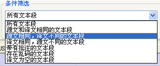
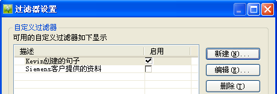
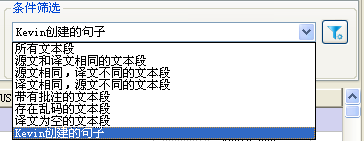

Heartsome TMX Editor 8 提供了搜索和过滤 的功能，最大程度的提高您维护 TMX 文件和记忆库的效率。以下是使用方法介绍：
-
过滤器名称：您的自定义条件名称，用于该条件“启用”后显示在“条件筛选”的下拉列表中。
-
条件组合方式：提供满足所有条件（AND）或任一条件（OR）的组合方式选择。
-
自定义的内容：您可以对源文、译文、批注、固定属性和自定义属性进行自定义。
-
操作符：系统默认带了包含、不包含、等于和不等于四种操作符。
您可以通过“编辑”视图的“条件筛选”下拉列表内容，快速过滤出相关内容。下拉列表的内容分两个部分：软件内置的常用过滤条件和用户自定义的过滤条件。

其中，软件的内置的过滤条件中，对于文本段内容的比较，我们提供了是否“忽略大小”和是否“忽略标记”两个选项，以得到更加精确的过滤结果。
 特别说明：“关键字搜索”与“快速过滤”之间没有互相关联，任何一个条件改变都会以原始 TMX
文件内容或记忆库内容重新刷新结果。
特别说明：“关键字搜索”与“快速过滤”之间没有互相关联，任何一个条件改变都会以原始 TMX
文件内容或记忆库内容重新刷新结果。
软件为您提供了灵活的自定义过滤器，您可以根据自己的需要来设置过滤条件，这些过滤条件您还可以选择启用或不启用。我们建议您将常用的自定义过滤条件设置为启用状态，这样您就可以在条件筛选的
下拉列表中选择并自动执行该条件，过滤出相关内容。
1、点击“条件筛选”模块中的 按钮，打开自定义过滤条件列表。
按钮，打开自定义过滤条件列表。

2、点击【新建】按钮，弹出自定义条件的定义操作对话框。

对列表中已有的自定义条件，同样可以进行【编辑】和【删除】。
3、列表中“启用”一列，是提供您设置是否启用这个条件，以避免部分暂时不需要的条件出现的“条件筛选”的下拉列表中，产生混淆和干扰。
例如：第1点描述中启用“Kevin创建的句子”后：
